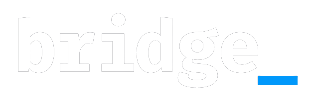

Thiago Mohr da Silveira
Systems
Coordinator
& Tech Lead
Specialized in steering high-concurrency credit ecosystems, launching retail financial products, and optimizing legacy architectures. Proven track record managing multi-disciplinary engineering teams with monthly operational impact exceeding R$ 200 million per month.
About Me
01A strategic IT leader bridging complex software architecture with high-stakes business outcomes.
Over the past 10+ years, I have specialized in building resilient, high-concurrency financial systems and leading cross-functional engineering teams that deliver measurable results. Currently serving as Systems Coordinator at Ouze Serviços Financeiros (Grupo Studio Z), I oversee critical credit engine ecosystems and backend architectures processing R$ 200M+ monthly, leading teams of 8 to 12 engineers across multiple internal squads and external software factories.
My expertise combines deep technical leadership — Python, Java Spring, relational databases — with PMI CAPM® project management certification and agile governance frameworks (Scrum, Kanban, MBA) to build high-availability solutions that scale under real-world production load.
Expertise
02Languages & Frameworks
Databases & Modeling
Business Domains & Platforms
System Architecture & Engineering
QA, Automation & Quality
Protocols, Docs & Observability
Management & Leadership
Tools, Versioning & AI
Domain & Regulations
Authentication & Security
Architecture, Networks & Infra
Cloud, CI/CD & Resilience
Observability & UX
Languages & Engines
Architectures & Practices
Security & Design Tools
Professional Journey

Systems Coordinator
Directing software engineering and agile delivery for Ouze's financial services division, managing systems with monthly transaction volumes exceeding R$ 200 million.
- Directed cross-functional engineering teams in launching the Studio Z / Ouze Super App, blending retail loyalty with digital financial services.
- Orchestrated the modernization of core credit engines, achieving high availability and reducing system latency under peak traffic.
- Managed complex structural migration from legacy Calcard / Ouze systems to a service-oriented, cloud-ready architecture.
- Instituted advanced agile methodologies, improving sprint predictability and cross-team collaboration.
Consultant
Orchestrated core system modernization and structural expansion for credit ecosystems.
- Modernized credit issuance pipelines aligned with a Visa strategic partnership.
- Shifted business operations from legacy monolithic models to an agile, app-centric management flow.
Quality Analyst
Oversaw quality assurance strategies and backend stability verification for the global launch of Heavy Metal Machines on PC (Steam) and consoles.
- Designed and executed load testing strategies to ensure real-time synchronization and high-concurrency backend stability for global MOBA traffic.
- Developed modular automated test suites for custom game engine components and network APIs, reducing release regressions.

Java Developer
Engineered enterprise-grade Java architectures for national public health infrastructure in collaboration with the Brazilian Ministry of Health.
- e-SUS APS: Developed core backend services for the "Prontuário Eletrônico do Cidadão" (Electronic Citizen Record), centralizing clinical data for over 5,000 municipalities.
- SISMOB: Constructed complex audit and monitoring modules for the National Health Facility Infrastructure System, tracking federal investments.
- Leveraged the Spring Framework ecosystem, Hibernate, and optimized SQL schemas to ensure query efficiency and data integrity.
Test Analyst
Initiated professional trajectory in Quality Assurance, focusing on performance metrics, scalability verification, and network latency testing for massive multiplayer online (MMO) titles.
- Taikodom: Validated real-time state synchronization and backend message queuing stability for the national space MMO.
- Heavy Metal Machines: Coordinated early-stage integration testing, detailing functional test matrices and backend stress test logs.
Selected Work
03Recommendations
04Contact
05Let's connect
Interested in hiring or discussing strategic technology leadership? Reach out below — I'm actively looking for senior leadership opportunities.
thiagomohrs@gmail.com